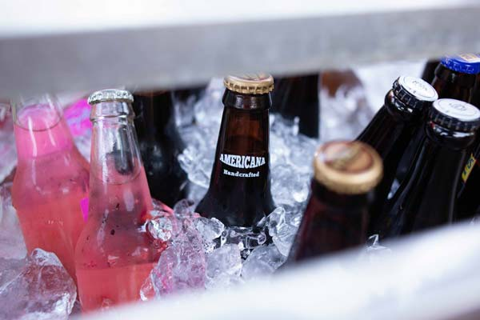

Most of our panels are run in South Africa. We regularly conduct panels in Johannesburg and Cape Town, but can arrange panels in all 9 provinces if necessary.
While we don’t often conduct tasting outside of South Africa, the Vibrand Group has an extensive Africa wide network, conducting research in 54 developing countries. Using this network, we are able to conduct tasting panels in many African countries on request.
